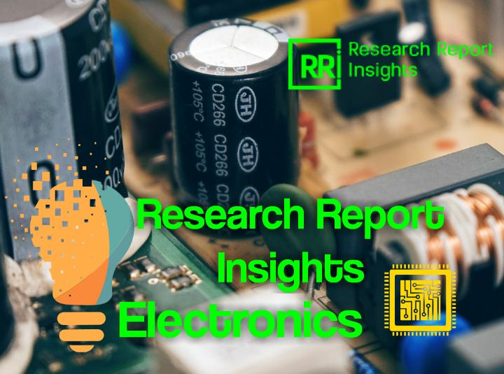

VCSELs Market to Reflect Steadfast Expansion

Vertical Cavity Surface Emitting Lasers (VCSEL) are semiconductor lasers, or more precisely laser diodes with monolithic laser resonator, where the light emitted leaves the device in a perpendicular direction to the chip surface.This is in contrast to the conventional edge-emitting lasers where the beam is emitted by splitting the single chip out of the wafer.VCSELs have a number of advantages over its conventional counterparts.
These include high compatibility with other circuitry and detectors, high reliability, scalability, package ability, and consumption of low power.Moreover, manufacturers prefer VCSELs because it can be tested at a number stages throughout the production process to check for processing issues and material quality.This is a key advantage of VCSELs over edge-emitting lasers and helps in lowering significant production cost.The above mentioned advantages increase the demand for VCSELs and boost the global VCSELs market.
The growth of the VCSELs market can also be attributed to the increasing rate of adoption of VCSELs in emerging applications, such as atomic clocks, GPS, magnetometers, and proximity sensing.
The global VCSELs market is segmented on the basis of raw materials, applications, and geography.By raw materials the global VCSELs market is segmented into gallium nitride (GaN) indium phosphide (InP), gallium arsenide (GaAs), and others (AlGaAs, InGaAsN, etc.).The gallium arsenide (GaAs) based VCSELs hold a significant share of the market and is expected to so during the forecast period.The gallium nitride (GaN) based VCSELs have a number of advantages but suffer from lack of conductivity due to which its growth will be limited.Indium phosphide (InP) based VCSELs have great potential and is expected to grow with a significant CAGR.
On the basis of applications the global VCSELs market is categorized into eight parts.These include chip scale atomic clocks, biological tissue analysis, computer mice, laser printers, absorption spectroscopy, analog broadband signal transmission, and optical fiber data transmission.By applications optical fiber data transmission holds the largest market share and is expected to hold its position during the forecasted period from 2016 to 2024.Laser printers hold the second largest market share followed by computer mice.Chip scale atomic clocks is relatively new application of VCSELs but is expected to gain popularity during the forecast period.Biological tissue analysis is also a potentially attractive market for VCSEL especially with the rise in the public awareness regarding health issues and the increase in the incidence of diseases, such as cancer.
By geography, the VCSELs market has been classified into four regions namely Asia Pacific, Europe, North America, and Rest of the World (RoW).Currently, Europe held the major share of the market, followed by North America, Asia Pacific and Rest of the World (RoW).Countries of Europe are bouncing back from the recent depression and as the economy is stabilizing it is strengthening the VCSEL market in this region.The VCSEL market in North America is expected to grow and remain strong during the forecast period from 2016 to 2024.With emerging economies like that of India, China, and Japan the VCSEL market in Asia Pacific is expected to be the most attractive during the forecasted period.Countries in Rest of the World (RoW), which includes countries in South America, Middle East, and Latin America are also showing promise and the growth of VCSELs market in this part of the world is expected to be impressive.
Key players profiled in this report include IQE Public Limited Company (United Kingdom), Finisar Corporation (United States), Broadcom Ltd (Singapore), II-VI Incorporated (United States), Coherent, Inc (United States), Panasonic Corporation (Japan), Newport Corporation (United States), Royal Philips Electronic N.V (Netherlands), Princeton Optronics, Inc.(United States), and Lumentum Holdings, Inc.(United States).
The segments covered in the VCSELs market are as follows: Global VCSELs Market: By Raw Materials • Gallium Nitride (GaN) • Gallium Arsenide (GaAs) • Indium Phosphide (InP) • Others (InGaAsN, AlGaAs, etc.)Global VCSELs Market: By Applications • Optical fiber data transmission • Analog broadband signal transmission • Absorption Spectroscopy • Laser printers • Computer mice • Biological tissue analysis • Chip scale atomic clocks • Other applications Global VCSELs Market: By Geography • North America U.S.Canada Mexico • Europe U.K.Germany France Italy Rest of Europe • Asia Pacific India China Japan Rest of Asia Pacific • Rest of the World (RoW) Middle East Latin America Africa
Share on Facebook Tweet Follow us
Posted On: 2019-03-27T00:00:00
Posted By: Bisvjeet Das


Content Date: 2019-03-27
Download Date: 2021-07-09
Document ID: L0C04EDI8